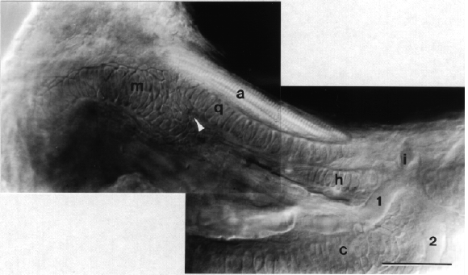

Modified from:
Kimmel et al., 1955.
Developmental Dynamics 203:253-310. Copyright © 1995 Wiley-Liss, Inc.
Reprinted only by permission of Wiley-Liss, a subsidiary of John Wiley &
Sons, Inc.
Fig. 41. Jaw cartilage and muscle formation is well underway by the end of the hatching period. Left side Nomarski view, dorsal to the top, anterior to the left, at the protruding-mouth stage (72 h). The quadrate (q) and more ventral and anterior Meckel's (m) cartilages of the mandibular arch meet at the arrowhead, the primary jaw articulation. The adductor mandibulae muscle (a), that closes the mouth, runs ventral the eye. It inserts on both of these mandibular arch cartilages. The posterior end of the quadrate overlaps with the anterior end of the dorsal cartilage of the hyoid arch, the hyosymplectic (h). The field of view includes only a small portion of the ventral cartilage of the hyoid arch, the ceratohyal (c). The ceratohyal is the thickest cartilage present in the embryo; at first one might mistake it for Meckel's cartilage. The first aortic arch (1) passes just anterior to the ceratohyal. The second aortic arch (2) passes just posterior to it. Dorsal to the same cartilage these two arteries join together to form the internal carotid artery (i). Scale bar: 50 µm.

Figure 41